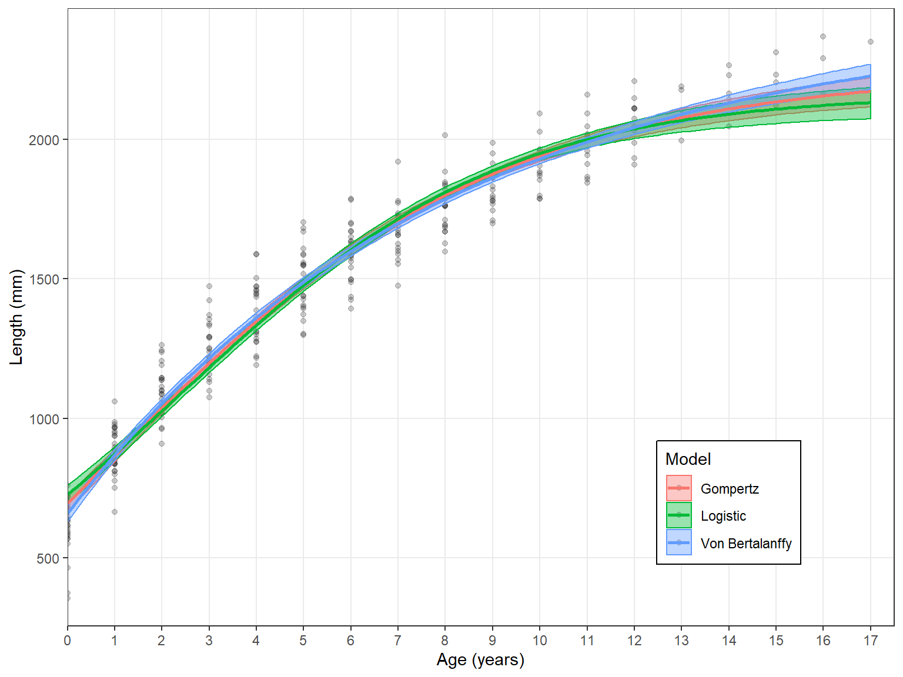
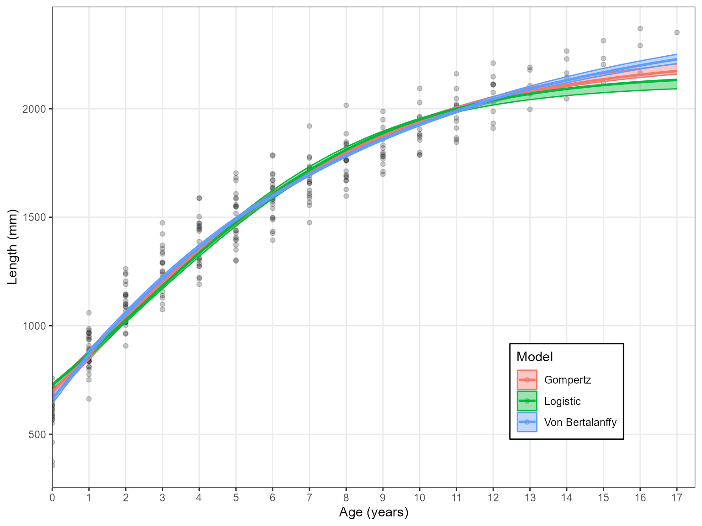
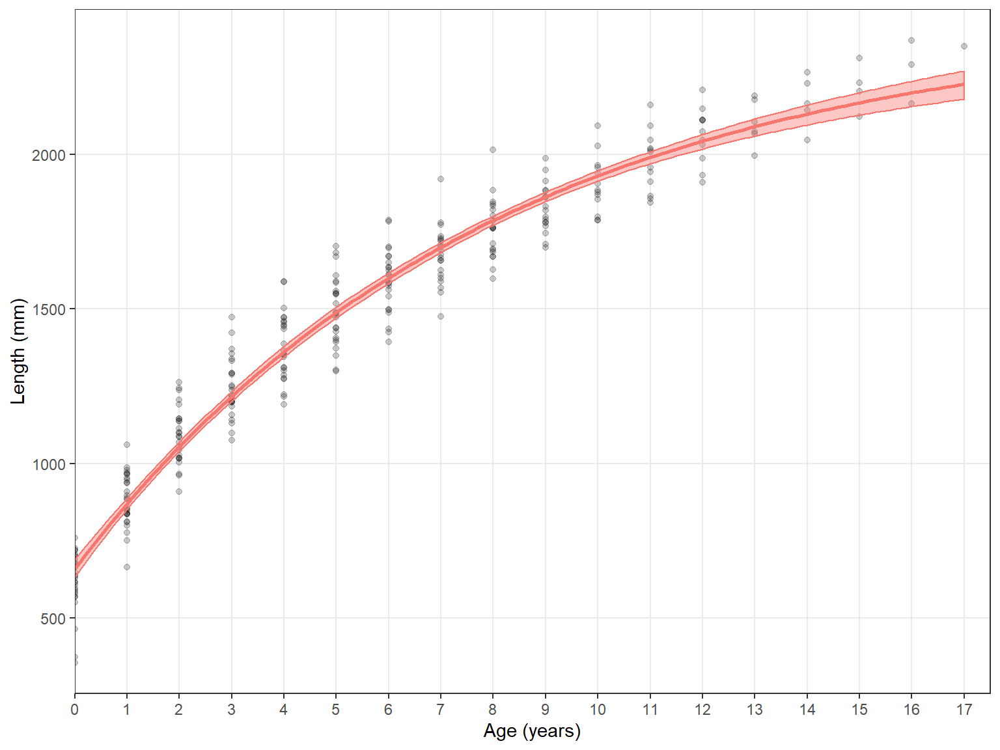
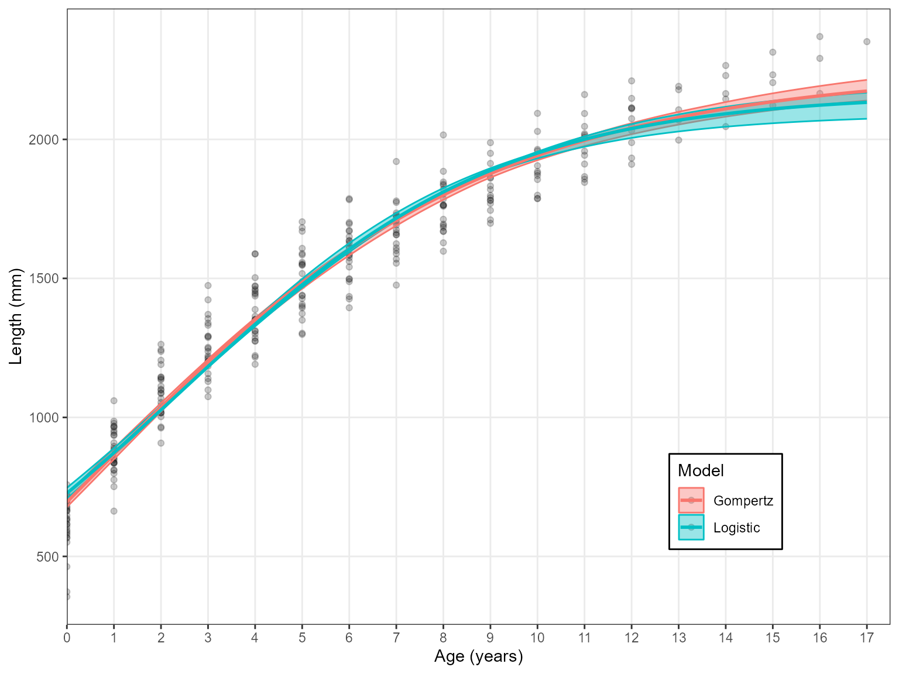
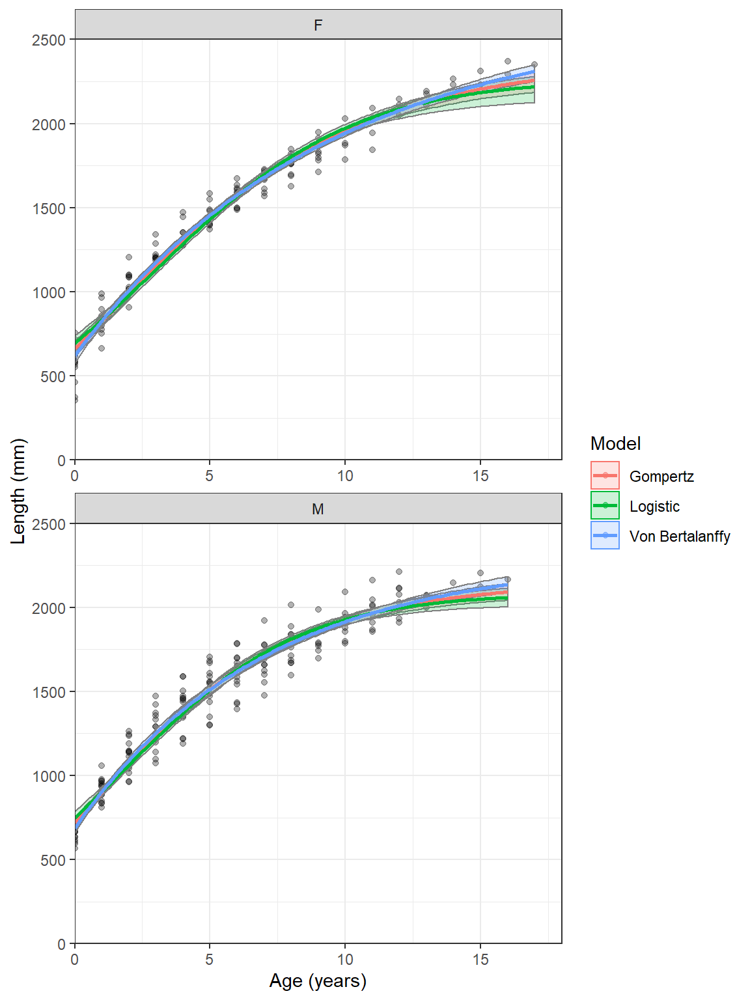
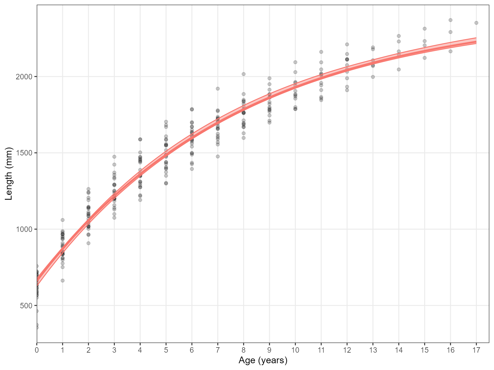

vignettes/Growth_estimation.Rmd
Growth_estimation.RmdPlease cite this package if it is used in any publication. The citation details can be accessed in the command line:
citation("AquaticLifeHistory")
#>
#> To cite AquaticLifeHistory use:
#>
#> Smart J 2019 AquaticLifeHistory: Fisheries life history analysis
#> using contemporary methods.
#> https://github.com/jonathansmart/AquaticLifeHistory
#>
#> Smart, J. J., Chin, A. , Tobin, A. J. and Simpfendorfer, C. A.
#> (2016) Multimodel approaches in shark and ray growth studies:
#> strengths, weaknesses and the future. Fish and Fisheries, 17:
#> 955-971. doi:10.1111/faf.12154
#>
#> To see these entries in BibTeX format, use 'print(<citation>,
#> bibtex=TRUE)', 'toBibtex(.)', or set
#> 'options(citation.bibtex.max=999)'.Growth information attained through length-at-age analysis is a key component in many fisheries analyses. This package gives the user the ability to quickly and efficiently estimate growth for an aquatic species (fishes, sharks, molluscs, crustaceans, etc.) using robust and contemporary techniques. This can be achieved using either a single model approach (i.e. application of a von Bertalanffy growth function) or through a multi-model approach where multiple models are applied simultaneously and compared to one another.This package will provide parameter estimates with errors, length-at-age estimates with bootsrapped percentiles, plots and model statistics - providing users with everything required for scientific publication.
Estimate_Growth()
Growth functions can be tested using an included dataset which contains length-at-age data for common blacktip sharks (Carcharhinus limbatus) from Indonesia.
library(AquaticLifeHistory)
data("growth_data")
head(growth_data)
#> Age Length Sex
#> 1 0 628.7329 F
#> 2 1 895.8052 F
#> 3 2 1098.3352 F
#> 4 3 1287.5114 F
#> 5 4 1471.1238 F
#> 6 5 1584.6282 FNote that this data has three columns: Age, Length and Sex. The Estimate_growth() function can be used to fit growth curves to these data and will automatically determine the columns “Age” and “Length” from similar character strings. The “Sex” column can be included in the data provided to the function but will be ignored. The user does not need to subset the data for the correct columns. However, multiple length columns cannot be provided (for example Fork Length and Total length) as the function can’t distinguish which is to be used.
Length-at-age 95th percentiles will be produced for the growth curve through bootstrapping with 1000 iterations being default. The Estimate_growth() will return a list of parameter estimates for three candidate models: the von Bertalanffy growth function (“VB”), Gompertz growth function (“Gom”) and Logistic growth function (“Log”). The Akaike’s information criterion (AIC) results for each model will also be returned as a list element, demonstrating which growth model best fit the data. A plot will be printed with the growth curves for all included models.
Estimate_Growth(data = growth_data)
#> $VonB
#> Parameter SE
#> Linf 2439.5652152 50.416333174
#> k 0.1253499 0.006938586
#> L0 659.2971932 14.318722941
#> RSE 97.9461196 NA
#>
#> $Logistic
#> Parameter SE
#> Linf 2163.8640322 26.46867899
#> g 0.2894532 0.01039625
#> L0 727.0885241 13.58771361
#> RSE 110.3850532 NA
#>
#> $Gompertz
#> Parameter SE
#> Linf 2250.137001 32.621706468
#> g 0.207524 0.008455424
#> L0 695.603479 13.779414030
#> RSE 103.855273 NA
#>
#> $AIC
#> Model AICc AIC diff Weight
#> 1 VB 3535.10 0.00 1
#> 2 Log 3605.40 70.30 0
#> 3 Gom 3569.54 34.45 0The Estimate_Growth() function produces these outputs in three steps: 1. Starting parameters for the models are determine using the Ford-Walford method. 2. The models are fit to the data using the nls() function. + The nls() function can be very fragile and prone to non-convergence if the data is not well suited to a particularly model. Using the models argument to specify different models is a good way to intially exclude problematic growth models if a non-convergence error message occurs. 3. Bootstrapping is performed to determine 95th percentiles along the growth curve. These are included in the plot or returned to the used if plots = FALSE is used. + The bootstrap iterations are specified using the n.bootstraps arugment. The default is 1000.
One model can also be specified using the models argument:
Estimate_Growth(data = growth_data, models = "VB")
#> $VonB
#> Parameter SE
#> Linf 2439.5652152 50.416333174
#> k 0.1253499 0.006938586
#> L0 659.2971932 14.318722941
#> RSE 97.9461196 NA
#>
#> $AIC
#> Model AICc AIC diff Weight
#> 1 VB 3535.1 0 1Or several can be specified:
Estimate_Growth(data = growth_data, models = c("Log", "Gom"))#> $Logistic
#> Parameter SE
#> Linf 2163.8640322 26.46867899
#> g 0.2894532 0.01039625
#> L0 727.0885241 13.58771361
#> RSE 110.3850532 NA
#>
#> $Gompertz
#> Parameter SE
#> Linf 2250.137001 32.621706468
#> g 0.207524 0.008455424
#> L0 695.603479 13.779414030
#> RSE 103.855273 NA
#>
#> $AIC
#> Model AICc AIC diff Weight
#> 1 Log 3605.40 35.85 0
#> 2 Gom 3569.54 0.00 1Note: The three models must be specified as “VB”, “Log” and “Gom”. Otherwise there will be an error
Estimate_Growth(data = growth_data, models = "VBGF")
#> Error in Estimate_Growth(data = growth_data, models = "VBGF"): Models an only be 'VB', 'Log', 'Gom' or a combination of theseIf you are plotting one model you probably don’t want a legend included. This can be removed using the plot.legend argument. This also works when several models are plotted
Results <- Estimate_Growth(data = growth_data, models = "VB", plot.legend = FALSE) Lastly, the y-axis label will automatically scale the unit from mm to cm based on the input data
new.dat <- growth_data
new.dat$Length <- new.dat$Length/10
Results <- Estimate_Growth(new.dat) ##Returning length-at-age estimates It is recommended that users create their own plots for publications. Therefore setting plots = FALSE will provide these estimates as an additional list object rather than printing a plot.
results <- Estimate_Growth(data = growth_data, plots = FALSE)
Length_at_age_estimates <- results$Estimates
head(Length_at_age_estimates)
#> Model Age AVG low upp
#> 1 Von Bertalanffy 0.0 659.2972 629.7384 686.8264
#> 2 Von Bertalanffy 0.1 681.4736 653.0167 707.2700
#> 3 Von Bertalanffy 0.2 703.3737 676.2158 727.6496
#> 4 Von Bertalanffy 0.3 725.0010 699.4769 747.9608
#> 5 Von Bertalanffy 0.4 746.3589 722.1209 768.5352
#> 6 Von Bertalanffy 0.5 767.4507 744.4616 788.7089Calculate_MMI
Multi-model inference (MMI) can be useful when no particular candidate model provides a better fit than the others (\(\Delta AIC\) < 2). This involves averaging all models accross the growth curve based on their AIC weights (\(w\)). It will return model averaged values of \(L_{\infty}\) and \(L_{0}\) with averaged standard errors. No model averaged growth completion parameters (\(k\) for VBGF, \(g\) for Gompertz or \(g\) for Logistic) are returned as these parameters are not comparable accross models.
Calculate_MMI takes the outputs of Estimate_Growth with plots = FALSE (so that length-at-age estimates are available) and will calculate MMI parameters and standard errors as well as model averaged length-at-age estimates.
results <- Estimate_Growth(data = growth_data, plots = FALSE)
Calculate_MMI(results)
#> $`MMI parametrs`
#> Parameter AVG SE
#> 1 Linf 2439.5652 50.41633
#> 2 L0 659.2972 14.31872
#>
#> $`MMI estimates`
#> Age AVG
#> 1 0 659.2972
#> 2 1 870.0338
#> 3 2 1056.0610
#> 4 3 1220.2898
#> 5 4 1365.2883
#> 6 5 1493.3221
#> 7 6 1606.3897
#> 8 7 1706.2545
#> 9 8 1794.4719
#> 10 9 1872.4140
#> 11 10 1941.2914
#> 12 11 2002.1721
#> 13 12 2055.9981
#> 14 13 2103.6006
#> 15 14 2145.7128
#> 16 15 2182.9814
#> 17 16 2215.9772
#> 18 17 2245.2035Be aware that bootstrapping cannot be applied for MMI so no length-at-age errors are available. Also multi-model theory dictates that model averaged errors will be larger than the cumulative errors of candidate models. So don’t be alarmed if you get large parameter standard errors.
Separating the sexes is common and is achieved by subsetting data and running the function multiple times. They can then be combined and plotted afterwards. This can be done for one model or several. Here is an example using the ggplot2 package.
# Create data.frames of separate sexes
Females <- dplyr::filter(growth_data, Sex == "F")
Males <- dplyr::filter(growth_data, Sex == "M")
# Estimate growth
Female_ests <- Estimate_Growth(Females,n.bootstraps = 1000, plots = FALSE)
Male_ests <- Estimate_Growth(Males, n.bootstraps = 1000,plots = FALSE)
# Combine data sets with a new variable designating sex
Female_LAA <- Female_ests$Estimates
Female_LAA$Sex <- "F"
Male_LAA <- Male_ests$Estimates
Male_LAA$Sex <- "M"
combined_data <- rbind(Male_LAA, Female_LAA)
library(ggplot2)
#> Warning: package 'ggplot2' was built under R version 3.5.3
ggplot(combined_data, aes(x = Age, y = AVG, fill = Model, col = Model)) +
facet_wrap(~Sex, ncol = 1, scales = "free")+
geom_point(data = Males, aes(x = Age, y = Length, fill = NULL, col = NULL), alpha = .3) +
geom_point(data = Females, aes(x = Age, y = Length, fill = NULL, col = NULL), alpha = .3) +
geom_ribbon(aes(ymin = low, ymax = upp, col = NA), alpha = 0.2)+
geom_line(size = 1)+
scale_y_continuous(name = "Length (mm)", limits = c(0,2500), expand = c(0,0))+
scale_x_continuous(name = "Age (years)", limits = c(0,18), expand = c(0,0))+
theme_bw() # Combining two and three parameter models
It is common practice for fish species to fix \(L_{0}\) as this parameter has a direct relation to length-at-birth (often zero for fish). This is done via a single argument Birth.Len. If this is unspecified than three parameter models are used. However, if Birth.Len is specified then two parameters are used with that value used to fix the \(L_{0}\) parameter.
Estimate_Growth(growth_data, Birth.Len = 600)
#> $VonB
#> Parameter SE
#> Linf 2350.0363602 37.543989813
#> k 0.1436146 0.005763834
#> RSE 100.4842123 NA
#>
#> $Logistic
#> Parameter SE
#> Linf 2050.9793958 19.509968179
#> g 0.3807714 0.008422721
#> RSE 124.9385671 NA
#>
#> $Gompertz
#> Parameter SE
#> Linf 2148.7053008 23.646000420
#> g 0.2542661 0.006791104
#> RSE 111.5420183 NA
#>
#> $AIC
#> Model AICc AIC diff Weight
#> 1 VB 3549.09 0.00 1
#> 2 Log 3677.17 128.08 0
#> 3 Gom 3610.48 61.39 0These can be plotted alongside there three parameter versions as well. Here is an example for the VBGF
# Fit models
two_pars <- Estimate_Growth(growth_data, models = "VB", Birth.Len = 600, plots = FALSE)
three_pars <- Estimate_Growth(growth_data, models = "VB", plots = FALSE)
# Change Model name to represent how many parameters they have
two_pars_Ests <- two_pars$Estimates
two_pars_Ests$Model <- "2 parameter VBGF"
three_pars_Ests <- three_pars$Estimates
three_pars_Ests$Model <- "3 parameter VBGF"
combined_data <- rbind(two_pars_Ests, three_pars_Ests)
ggplot(combined_data, aes(x = Age, y = AVG, fill = Model, col = Model)) +
geom_point(data = growth_data, aes(x = Age, y = Length, fill = NULL, col = NULL), alpha = .3) +
geom_ribbon(aes(ymin = low, ymax = upp, col = NA), alpha = 0.2)+
geom_line(size = 1)+
scale_y_continuous(name = "Length (mm)", limits = c(0,2500), expand = c(0,0))+
scale_x_continuous(name = "Age (years)", limits = c(0,18), expand = c(0,0))+
theme_bw() +
theme(legend.position = c(0.8, 0.2))A two parameter model is demonstrated here for sharks as this is the data used in these examples. However, fixing growth parameters for sharks is less appropriate than techniques such as back-calculation. However, for fish species, length-at-bith is close to zero due to their larval life stage. Therefore, length-at-birth is commonly fixed at zero to represent this. Most applications of growth models for fish, have used a \(t_{0}\) rather than \(L_{0}\) which represents the time-at-length-zero rather than a length-at-birth (i.e time-zero). However, \(t_{0}\) does not have the same definition accross multiple growth models whereas \(L_{0}\) always refers to length-at-birth. This parameter is therefore used a multi-model approach. \(t_{0}\) can be calculated from the VBGF parameters as: \[t_{0}=(1/k)log(L_{\infty}-L_{0})/L_{\infty})\]
Each of the growth models fit in these analyses have a multivariate normal distribution. This means that each parameter has a normal distribution but are correlated to one another. Therefore, if you would like to use these parameters in simulation analyses, a correlation matrix is needed to include parameter values in the simulations. This is not an analysis that is included in this package. However, the ability to return the correlation matrix is included in the Estimate_Growth() function by using correlation.matrix = TRUE.
Estimate_Growth(growth_data, correlation.matrix = TRUE)
#> $VonB
#> Linf k L0
#> Linf 1.0000000 -0.9617305 0.4476484
#> k -0.9617305 1.0000000 -0.5986417
#> L0 0.4476484 -0.5986417 1.0000000
#>
#> $Logistic
#> Linf g L0
#> Linf 1.0000000 -0.8190773 0.4284394
#> g -0.8190773 1.0000000 -0.7632670
#> L0 0.4284394 -0.7632670 1.0000000
#>
#> $Gompertz
#> Linf g L0
#> Linf 1.0000000 -0.8981026 0.4488018
#> g -0.8981026 1.0000000 -0.6991582
#> L0 0.4488018 -0.6991582 1.0000000Full details on these approaches can be found in: Smart, J. J., Chin, A. , Tobin, A. J. and Simpfendorfer, C. A. (2016) Multimodel approaches in shark and ray growth studies: strengths, weaknesses and the future. Fish and Fisheries, 17: 955-971. doi:10.1111/faf.12154
which should be cited if this package is used in a publication.